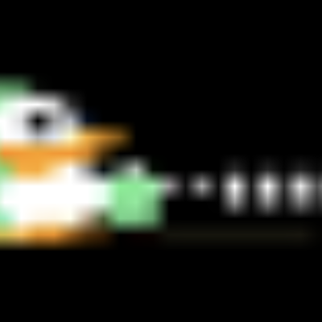

구현 기능
|
캐릭터 이동 기능 조이스틱으로 캐릭터를 이동할 수 있습니다. |
|
|  |
레이저건 발사 기능 버튼을 눌러서 레이저건을 발사할 수 있습니다. |
|
거미줄에 걸리는 기능 거미줄에 닿으면 해당 캐릭터는 아무것도 못하게 됩니다. 만약 두 캐릭터 모두 거미줄에 걸리면 패배합니다. |
|
|
승리 기능 두 캐릭터가 동시에 하트를 먹으면 승리합니다. |
배경과 목적
마이크로프로세서응용설계 수업 시간에 Cortex-M3용 프로그램을 만드는 과제가 있었습니다. 최대한 창의적인 작품을 만들기 위해 제작하게 되었습니다.
마이크로프로세서응용설계 수업 시간에 Cortex-M3용 프로그램을 만드는 과제가 있었습니다. 최대한 창의적인 작품을 만들기 위해 제작하게 되었습니다.
배운 점
- C언어로 Cortex-M3 전용 프로그램을 구현하는 법을 알게 되었습니다.
진행 절차
- 처음에는 아무것도 몰라서 캐릭터를 움직이는 것, 레이저건을 쏘는 것 등 간단한 것을 하나씩 구현하고 실행하였습니다. 이렇게 버튼을 누르면 동작하는 것은 인터럽트 방식을 사용하였습니다.
- 지금까지 구현한 것들을 합치고 실행하였지만 제대로 작동되지 않았습니다.
- 소스 코드를 면밀히 확인한 후 수정한 끝에 제대로 작동할 수 있었습니다.
- 이렇게 해서 원하는 프로그램을 구현할 수 있었습니다.
역량 강화를 위해 가장 노력한 점
Cortex-M3 전용 프로그램 구현 및 창의적인 게임 제작
Cortex-M3 전용 프로그램 구현 및 창의적인 게임 제작
전체 구조

사용 기술
C
C
개발 환경
RTOS-Aware
RTOS-Aware
부연 설명
- 전공 과목 ‘마이크로프로세서응용설계’ 마지막 과제로 제출하였습니다.
- 소스 코드